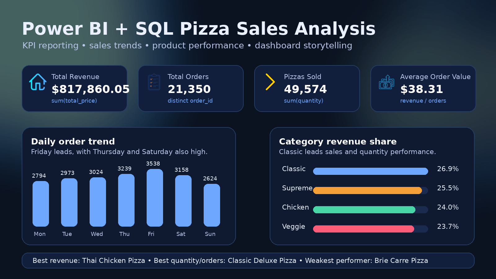

Power BI & SQL Pizza Sales Analysis
End-to-end business intelligence project analyzing pizza sales revenue, total orders, best/worst sellers, category performance, size performance, and daily/monthly trends.

- SQL KPI calculations for revenue, orders, quantity, and average order value
- Power BI dashboard with product, category, size, daily, and monthly analysis
- Business insights on high-performing and low-performing pizza items